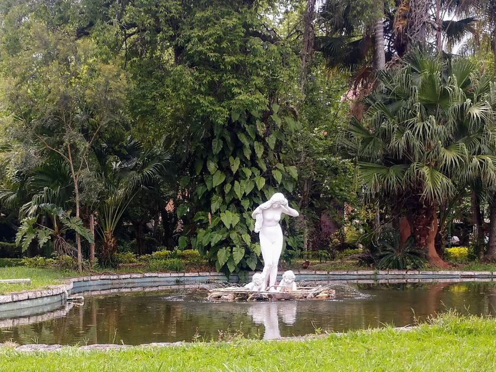
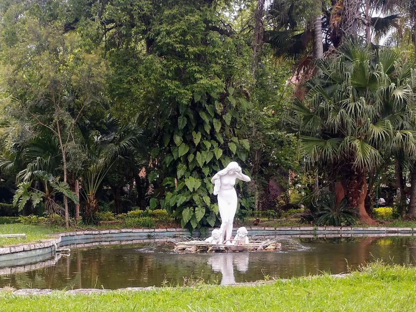

Conheça Caxambu
Um Blog sobre a Cidade de Caxambu
Situada no planalto da Serra da Mantiqueira, no Sul de Minas Gerais, Caxambu tem uma localização privilegiada e está próxima de três importantes capitais: São Paulo, Rio de Janeiro e Belo Horizonte, constituindo um portal de entrada do turismo para...

A principal atração turística de Caxambu é o Parque das Águas. O parque é tombado pelo Instituto Estadual do Patrimônio Histórico e Artístico de Minas Gerais (IEPHA), tem 210 mil m² de área e concentra o maior complexo hidromineral do mundo...


A cidade de Caxambu tem um dos maiores complexos hidrominerais do mundo. O Parque das Águas tem 12 fontes de águas minerais com propriedades físico-químicas diferentes e 1 gêiser. Por esse motivo...
 

É comum, na história da arte, a representação de ninfas e musas sentadas à beira da fonte, ou debruçando-se sobre ela, a fim de admirar o seu reflexo. Também...
"Seja bem-vindo ao meu blog sobre a cidade de Caxambu, um verdadeiro tesouro escondido nas montanhas de Minas Gerais. Neste espaço, você encontrará informações valiosas sobre os encantos, a história e a cultura dessa cidade incrível, além de dicas e sugestões de lugares para visitar, restaurantes para experimentar e muito mais. Aqui, você terá a oportunidade de explorar a cidade das delícias, como é conhecida, e descobrir tudo o que ela tem a oferecer. Então, venha comigo nessa jornada e prepare-se para se surpreender!"